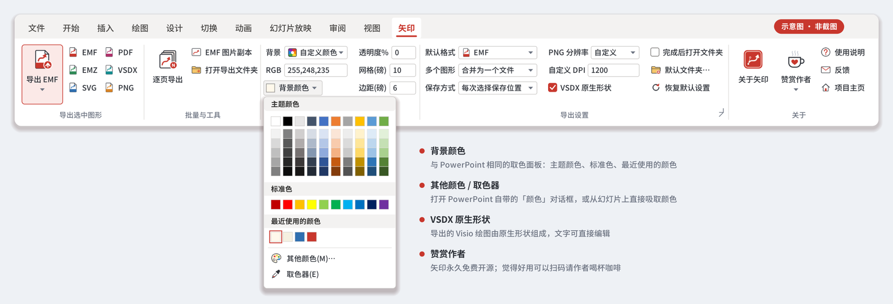
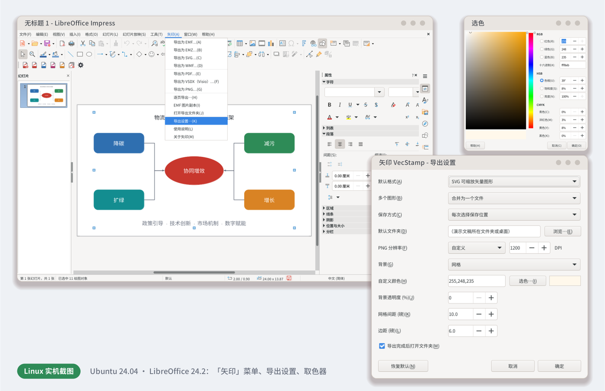

选中即印
PowerPoint 里的图形，一键导出 EMF、SVG、PDF、Visio 等矢量格式
论文插图、标书配图、技术文档：在幻灯片里画好的图，选中后点一下，就能得到放大、打印都不失真的矢量文件。
适用于 Windows 和 macOS 版 PowerPoint（2013 及以上）、Linux 版 LibreOffice。永久免费，MIT 协议开源，离线可用。
使用步骤
-
选中图形
单个图形、多个图形或组合都可以；什么都不选时，可以导出当前幻灯片上的全部图形。
-
点「导出」
在「矢印」选项卡上点大按钮，或从下拉菜单选择格式。较大的图形会显示导出进度，按 Esc 可随时取消。
-
插入你的文档
把文件插入 Word、LaTeX、Visio 或网页。放大、打印、重新排版，线条和文字都保持清晰。
- 导出进度窗口
- 导出复杂图形时显示进度和当前步骤，不再像卡住一样没有反应；按 Esc 可以取消。
- Visio 原生形状
- VSDX 中的矩形、椭圆、箭头、连接线和自由曲线都是 Visio 原生形状，文字可以直接编辑。不需要安装 Visio。
- PowerPoint 同款取色
- 背景颜色使用和 PowerPoint 一样的面板：主题颜色、标准色、最近使用的颜色、其他颜色和取色器。
- SVG 支持 PowerPoint 2013+
- 没有原生 SVG 导出的 PowerPoint 2013 – 2021 改用内置转换，保留路径、渐变、图片和可选中的文字，无需安装其他软件。
- 反馈更方便
- 「反馈」按钮可以选择发邮件给作者，或在 GitHub 提交 Issue。
- 永久免费
- 「关于」页面写明矢印永久开源免费，并加入了赞赏二维码，赞赏完全自愿。
七种格式，按用途选
同一个按钮，导出到不同的地方。默认格式可以在功能区里设置，下拉菜单随时切换。
| 格式 | 适合用在 | 说明 |
|---|---|---|
| EMF | Word / WPS 论文、报告 | 插入后保持矢量，双击可以取消组合继续编辑。 |
| EMZ | 邮件、网盘发送 | 压缩过的 EMF，内容相同、体积更小，Office 可直接插入。 |
| SVG | 网页、Inkscape、Illustrator、Figma | 通用矢量格式，浏览器可直接打开；PowerPoint 2013 起均可导出。 |
| 期刊投稿、LaTeX、打印 | 页面大小就是图形大小，不留白边，字体随文件嵌入。 | |
| VSDX | 交给 Visio 继续编辑 | 由 Visio 原生形状组成，文字可编辑；无法转换的对象保留为矢量图片。 |
| PNG | 只接受位图的投稿系统 | 150 / 300 / 600 DPI 或自定义，最高 3000 DPI，支持透明背景。 |
| WMF | 只认旧格式的软件 | 兼容性最好，但不支持透明和渐变，非必要不选。 |
背景也是矢量
导出时可以给图形加上背景和边距，七种格式都适用。矢量格式里的背景本身也是矢量矩形和线条，不会变成一张底图。
默认选项。PNG 保留透明通道，矢量格式不加任何底色。
功能都在一个选项卡里
安装后，PowerPoint 的「视图」右侧多出「矢印」选项卡：导出、批量工具、背景、导出设置和关于，都可以一键直达。

Linux 上用 LibreOffice
PowerPoint 没有 Linux 版，矢印在 Linux 上以 LibreOffice Impress / Draw 扩展的形式提供：同样的七种格式、五种背景、自定义分辨率、逐页导出和 Visio 原生形状。
这个扩展不依赖操作系统，Windows 和 macOS 上的 LibreOffice 也可以安装。

安装
下载后先完整解压，再运行对应系统的安装器，在菜单里选择「安装 / 更新」或「卸载」。
Windows
PowerPoint 2013 及以上，包括 2016、2019、2021、2024 和 Microsoft 365
- 保存并关闭所有 PowerPoint 窗口
- 双击
安装或卸载-Windows.bat，输入 1 - 打开 PowerPoint，在「视图」右侧找到「矢印」
macOS 实验性
PowerPoint for Mac 16.82 及以上
- 退出 PowerPoint
- 双击
安装或卸载-macOS.command，输入 1；首次运行请在访达中右键选择「打开」 - 在「工具 › PowerPoint 加载项」中添加
VecStamp.ppam，并选择启用宏
Linux
LibreOffice 6.4 及以上（Impress / Draw），无需 sudo
- 关闭 LibreOffice
- 在终端运行
bash 安装或卸载-Linux.sh，输入 1 - 重新打开 Impress，使用菜单栏的「矢印」
也可以在 LibreOffice 的「工具 › 扩展管理器」中添加 VecStamp-LibreOffice.oxt。
只改当前用户，敏感操作先征得同意。安装器不会修改系统安全设置：Windows 上需要临时开启的 VBA 工程访问会先询问并在完成后恢复，「受信任位置」只在你主动选择时才添加；macOS 不会移除隔离属性；Linux 以用户模式安装，拒绝以 root 运行。
常见问题
矢印收费吗？会收集我的数据吗？
不收费，永久开源免费，也没有广告。矢印在本机完成全部导出，不联网、不收集任何数据；只有你点击「反馈」或「项目主页」时，才会打开邮件程序或浏览器。
我的 PowerPoint 是 2016 / 2019，能导出 SVG 吗？
能。Microsoft 365 和 Office 2024（版本 2302 及以上）直接使用 PowerPoint 的 SVG 导出；更早的 Windows 版本（2013 – 2021）会把图形打印成 XPS，再由矢印内置的转换脚本生成 SVG，路径、渐变、图片和文字都会保留。整个过程在本机完成，不需要安装其他软件。
导出的 VSDX 在 Visio 里能编辑吗？
能。从 1.2.1 开始，矩形、椭圆、箭头、连接线、自由曲线和文本框都会转成 Visio 原生形状，填充、线条、箭头和文字格式尽量保持一致，文字可以直接修改。图表、SmartArt、艺术字等无法转换的对象会作为 EMF 矢量图片保留在原位。
如果更想要一张整体的矢量图，可以在「导出设置」中取消勾选「VSDX 原生形状」。
看不到「矢印」选项卡，或提示宏已被禁用？
在 PowerPoint 中打开「文件 › 选项 › 加载项」，管理「PowerPoint 加载项」，确认 VecStamp 已勾选。如果显示宏被禁用，重新运行 Windows 安装器并选择 3，把加载项所在的文件夹添加为受信任位置；卸载时会一并移除。
导出的 EMF 在别人电脑上字体变了？
EMF 和 SVG 记录的是字体名称，对方电脑缺少这个字体时会被替换。需要固定字体时请导出 PDF（字体随文件嵌入），或在投稿前用 Inkscape、Illustrator 把文字转为曲线。
3000 DPI 的 PNG 为什么会提示文件过大？
像素数随 DPI 的平方增长：一张 10 × 6 英寸的图在 3000 DPI 下有 5.4 亿像素。超过约 1.2 亿像素时矢印会先请你确认。论文插图通常 600 – 1200 DPI 就足够，需要更清晰时优先选择矢量格式。
遇到问题怎么反馈？
在「矢印」选项卡点「反馈」，可以选择发邮件或在 GitHub 提交 Issue；也可以直接写信到 vluckyzhang@gmail.com，或 提交 Issue。附上 PowerPoint 版本号（「文件 › 账户 › 关于 PowerPoint」）和出问题的文件，会更快找到原因。
永久开源，自愿赞赏
矢印以 MIT 协议开源，永久免费，没有广告，也不会推出收费版本，所有功能对每个人开放。
如果它帮你省下了时间，欢迎扫码请作者喝杯咖啡。赞赏完全自愿，不影响任何功能；在 GitHub 点个 Star、提出建议，或者把矢印分享给需要的人，同样是很大的支持。
- 永久免费
- MIT 开源
- 无广告
- 不联网
打开支付宝扫一扫
打开微信扫一扫